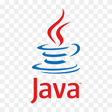

Professional Experience
Personal Projects
I am a full stack web developer. My experience as a professional comes from the logistics industry. Below is a summary of the tools I have worked with
and brief descriptions of the projects I used them on. My aim is to give anyone who is interested a more detailed idea of my experience than I can fit
on a resume.
Libraries, Frameworks and Tools
Database Technologies
My experience with databases is rooted in MSSQL. Most of the queries I've built were for dashboards tied to some production
process, where money would be lost if data was not current and accurate. Database performance was a major concern in most of software
projects I worked on. I have spent significant time working to reduce the runtime on a query below an acceptable threshold.
A significant portion of my SQL experience comes from troubleshooting SSRS reports. The warehouse environment worked in was highly dependent on them. I often fixed queries for reports that were returning duplicate rows or missing information. This gave me a front row seat to see how damaging a lack of data integrity can be to productivity.
A significant portion of my SQL experience comes from troubleshooting SSRS reports. The warehouse environment worked in was highly dependent on them. I often fixed queries for reports that were returning duplicate rows or missing information. This gave me a front row seat to see how damaging a lack of data integrity can be to productivity.
Front End
I built this website using vanilla JavaScript, HTML and CSS because I believe these are still the fundamental skills of front end development.
As a professional I built live dashboards using Python Flask for templating, with some use of jQuery on the front end. I have
also worked with two enterprise Angular apps, both of them front ends for proprietary logistics software. I also built one standalone
tool that used Angular for the front end.
Back End
The bulk of my back end experience is in Python running on Linux servers. I was part of a small team developing the code for an
entire warehouse. We had multiple different Flask apps for different purposes, as well as a huge number of scripts running as
cron jobs.
Working in a different office with a different team, I built a tool that allowed EDI engineers to modify and update customer records. The back end ran as a C# Azure Function. This was my only C# contribution as my focus there was more on front end.
Working in a different office with a different team, I built a tool that allowed EDI engineers to modify and update customer records. The back end ran as a C# Azure Function. This was my only C# contribution as my focus there was more on front end.
Projects
Angular Input Library


A library of input components for proprietary freight brokerage software. They were built with the company's
custom styling made available as an npm package on the company registry. It included a date/time picker, dropdown
menus, and a text input. All components were responsive, and the dropdown menus had search and multiselect options.
EDI Customer Integration

A tool to allow EDI engineers to input new customers to their database without having to write SQL code every time.
It consisted of a table displaying all the existing customers, with options to modify an existing record or add a new one.
Either option opened another view that broke out the 42 columns of the table into sections that could easily be modified.
The front end was Angular, the back end was an Azure function written in C#. I built this whole project by myself, it was the first and only time I have written C#
professionally.
Billing App Authentication


An existing billing tool for a warehouse. I was tasked with adding MSAL authentication
so that certain reporting features could be made available to other departments without exposing sensitive information.
The project was built in Python Flask with a front end using jQuery. My work on this project was almost entirely on the Python,
with only minor adjustments and additions being made to the UI.
Warehouse Dashboards
This was an existing project that housed all of the dashboards necessary for different stages of the warehouse production process.
I was tasked with creating several new dashboards, as well as helping troubleshoot the existing system as needed.
The dashboards themselves all ran from a single Flask app. Each dashboard recieved data from a dedicated SQLite database,
which was periodically refreshed by a seperate Python script running on a cronjob.
Currently, the time I spend coding for myself is devoted to algorithmic trading. The end goal is to develop a trading bot that will generate passive revenue.
It's a distant goal. I decided to invest my time in this because it provides many different kinds of challenging problems that push me to further develop my
skills. What I have learned so far has been well worth it.
Libraries, Frameworks and Tools
Database Technologies
I use SQLite databses for all of my personal projects. It takes minutes to set up and does everything I need it to do.
Front End
This website is the biggest front end project I have done for myself. I have used Dash in Python to create a barebones
UI for one of my old trading bots, but that was a long time ago. That said, I freqently use MatPlotLib to create visualizations
for market research. I have also used Seaborn and Plotly for the same thing.
Back End
Python Flask is my go to for any personal back end task.
Projects
AutoTrader
This is the first functional trading bot I ever built. It will buy and sell cryptocurrency based on programatically defined conditions.
It is a proof of concept - the conditions will not lead to profitable trades over time. This project was about developing the back end support
to be able to run and test live algorithms.
View repository
View repository
Binance Data Retrieval
This is a tool that allows retrieval of large volumes of historical market data from the Binance crypto exchange
View repository
View repository
Appointment Scheduler

This was a desktop app written in Java that connected to a MySQL database. It was the most in-depth coding project I did in school.
View repository
View repository
SimpleCalc
This was the first useable application I ever created. I haven't touched it in five years. It's on here simply to show that I have been
working with code for at least that long.
View repository
View repository